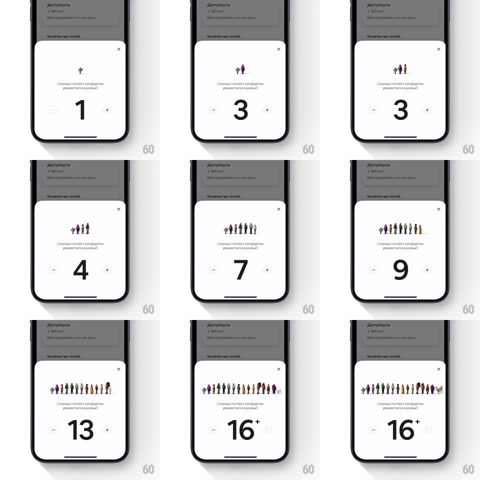

Media
Frame-by-frame

Rebuild this interaction 1:1: Airbnb's guest counter sheet - every tap of + springs another little illustrated person into the row above the count, and at 16+ a llama trots in as the easter egg.

Rebuild this interaction 1:1: Airbnb's guest counter sheet - every tap of + springs another little illustrated person into the row above the count, and at 16+ a llama trots in as the easter egg. ## Integration Integration: stack-agnostic spec - springs given as stiffness/damping, timed motions as duration + curve; map every value to your framework and animation library of choice. ## Scene Airbnb bottom sheet, white (shown in Russian locale): title "Сколько гостей с комфортом разместится в жилье?", a large count with - and + steppers, and above the count a growing row of tiny illustrated people in varied colors. At 16+ the counter shows "16+" and a llama joins the row. ## Motion spec Pattern: one springy character spawned per count increment. - Tap +: the count rolls to the new number (digits slide up, 200ms) and a new person pops into the row at its end: scale 0 -> 1 with spring ~480/16 (snappy overshoot) plus a 10px rise-and-settle. - The row recenters each time so the group stays centered (translate, 250ms ease-out); existing figures stay planted - only the newcomer animates. - Tap -: the last figure shrinks out (scale -> 0, 180ms, slight drop) and the count rolls down. - At 16 the + caps: the count becomes "16+", the + button dims to disabled, and the llama slides in from the right end of the row (translateX 30 -> 0 with a two-bounce trot, spring ~300/12) - the only figure that enters sideways. - Haptic tick on every increment/decrement; a heavier thud on the llama. ## Calibration - Figures are flat vector people ~28px tall, assorted colors/poses - no duplicates adjacent. - The row never exceeds one line; figures compress spacing slightly (min 4px gaps) past 10. ## Reduced motion Figures fade in/out (200ms); count changes instantly. ## Don't miss - The llama appears only at 16+ - never in the normal range. - The sheet's title and steppers never move; the row above the count owns all the motion.